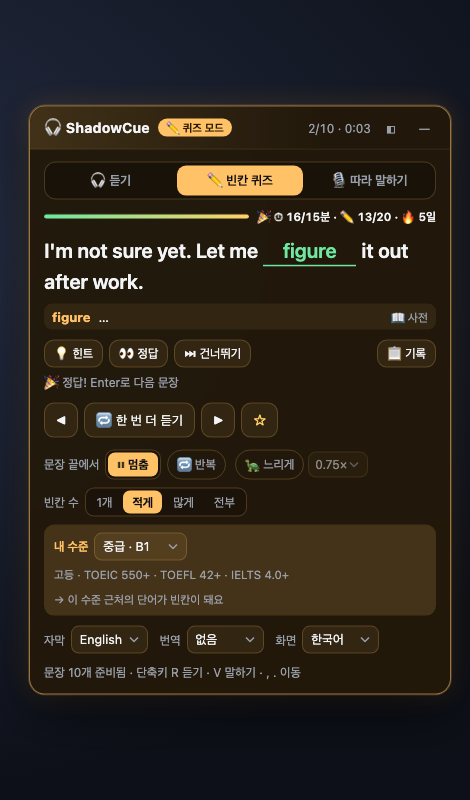
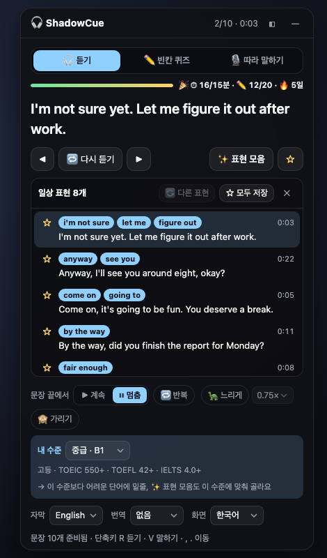
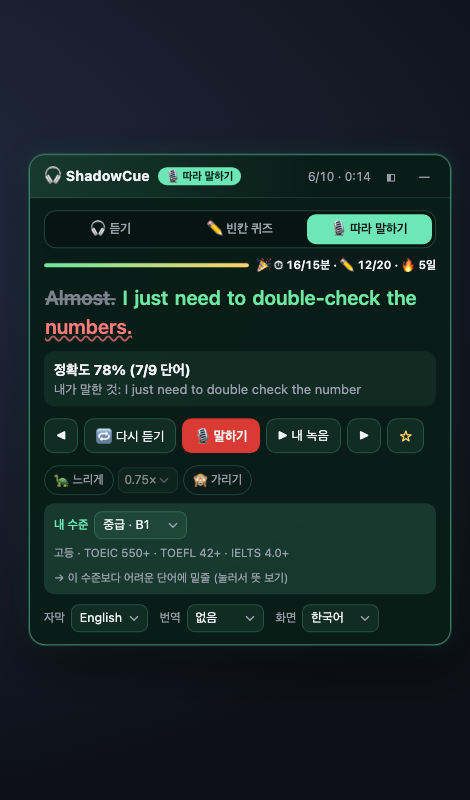

일상 표현 모음
영상 전체 자막에서 일상 대화에 바로 쓸 표현이 들어간 문장을 골라 줍니다. 누르면 그 장면으로 가고, ☆로 저장해 나중에 복습합니다.
- figure out, by the way, fair enough 같은 표현 태그
- 🔄 다른 표현, 저장하면 하나씩 더 추천
ShadowCue는 넷플릭스 영어 자막으로 문장 단위 반복 듣기, 내 수준에 맞춘 빈칸 받아쓰기, 따라 말하기 정확도를 연습하는 크롬 확장입니다. 회원가입이 없고, 학습 기록은 내 컴퓨터에만 남습니다.
무료 · Chrome 데스크톱 · 넷플릭스 계정이 필요합니다

듣기 → 빈칸 퀴즈 → 따라 말하기. 같은 장면을 세 번 다르게 연습합니다.
문장이 끝나면 멈추고, R로 다시 듣고, Enter로 다음 문장. 느리게(0.9×~0.5×), 문장 가리기, 한 문장 반복.
입문(A1)부터 고급(C1+)까지 내 수준 근처 단어가 빈칸이 됩니다. 빈칸 1개부터 문장 전체 받아쓰기까지.
배우를 따라 말하면 단어별로 맞음·다르게 들림·빠짐을 표시하고, 내 녹음을 다시 들을 수 있습니다.
영상 전체 자막에서 일상 대화에 바로 쓸 표현이 들어간 문장을 골라 줍니다. 누르면 그 장면으로 가고, ☆로 저장해 나중에 복습합니다.

Chrome 음성인식으로 내 말을 받아 원문과 비교합니다. 틀린 단어는 물결 밑줄, 빠뜨린 단어는 취소선.

수준을 하나 고르면 모든 모드에 적용됩니다. 시험 점수와 대략 이렇게 대응합니다.
| 수준 | CEFR | 대략 같은 수준 |
|---|---|---|
| 입문 | A1 | 초등 영어 |
| 초급 | A2 | 중학 · TOEIC 225+ |
| 중급 | B1 | 고등 · TOEIC 550+ · TOEFL 42+ · IELTS 4.0+ |
| 중상급 | B2 | 수능 · TOEIC 785+ · TOEFL 72+ · IELTS 5.5+ |
| 고급 | C1+ | TOEIC 945+ · TOEFL 95+ · IELTS 7.0+ |
TOEFL은 ETS가 공개한 CEFR 대응표, IELTS는 IELTS 공동 운영 기관의 CEFR 대응표를 따랐고, 학교·TOEIC은 대략적인 기준입니다.
하루 목표(분·빈칸 수)와 연속 기록은 확장 아이콘을 누르면 볼 수 있습니다. 화면은 한국어와 English 중에서 고를 수 있습니다.
ShadowCue에는 서버도, 계정도, 사용 추적도 없습니다.
저장한 문장, 퀴즈 기록, 학습 시간은 브라우저 안에만 있고, 확장을 지우면 함께 지워집니다.
🎙 말하기를 누를 때만 켜집니다. 녹음은 저장하지 않습니다. 음성을 글자로 바꿀 때는 Chrome 음성인식(Google)을 씁니다.
보고 있는 작품의 자막을 화면에서 연습하는 데만 씁니다. 밖으로 보내거나 통째로 저장하지 않습니다.
지금 무료인 기능은 앞으로도 무료입니다.
아닙니다. ShadowCue는 넷플릭스와 제휴하거나 승인받지 않은 독립 학습 도구입니다. 넷플릭스 재생 화면 위에 연습 패널을 띄웁니다.
지금은 데스크톱 Chrome에서만 동작합니다.
영어 자막(또는 영어 CC)이 있는 작품에서만 쓸 수 있습니다.
네. 듣기와 빈칸 퀴즈는 마이크 없이 동작합니다.